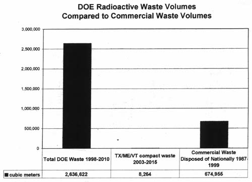
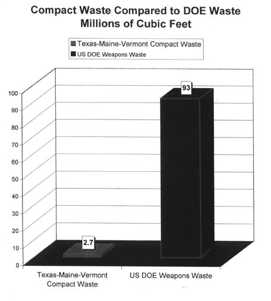
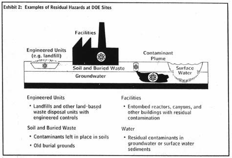
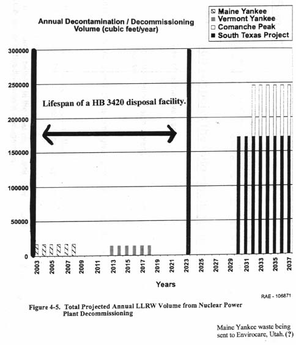

What is Low Level Radioactive Waste?
In Texas and nationally, most commercial low level radioactive waste comes from nuclear power plants.
Low level radioactive waste includes:
Irradiated components and piping: reactor hardware and pipes that are in continual contact
with highly radioactive water for the 20-30 years the reactor operates. The metal becomes
"activated" or radioactive itself.
Control Rods: from the reactor core of nuclear power plants
Poison curtains: which absorb neutrons from the water in the reactor core and irradiated fuel
(high level waste) pool.
Resins, sludges, filters, and evaporator bottoms: from cleansing the water that circulates
around the irradiated fuel in the reactor vessel and in the fuel pool.
Entire Nuclear power plants: if and when they are dismantled. This includes, for example,
from a typical 1,000 megawatt nuclear reactor building floor over 13,000 tons of contaminated
reinforcing steel bar.
How Long Does Low Level Waste Last?
Among the radioactive elements commonly found in nuclear reactor "low level" waste are:
Tritium, which remains radioactive for 120-240 years,
Strontium-90 (280-560 years),
Nickel-59 (760,000-1,520,000 years), and
Iodine-129 (160-320-million years)
By contrast, common medical waste elements include:
Technetium-99m (2.5-5 days)
Galium-67 (1-2 months)
Iodine-131 (80-160 days)
How Many Low Level Waste Generators Are There in Texas?
There were 59 radioactive waste generators in Texas in 2000, according to the Texas Department of
Health, Bureau of Radiation Control[1]. This is a smaller number than the amount of radioactive
materials users. (An interim study contracted by TNRCC states that only 75 generators have routinely generated
LLRW over the last 5 years. "Minor generators of LLRW do not produce a large enough amount of LLRW collectively,
much less individually, to warrant significant attention for the purpose of disposal planning."[2])
Of these 59 generators, only 43 generate radioactive waste on an annual basis.
Of these 43, less than half generate more than 15 cubic feet annually. 15 cubic feet of waste would fit into a box with 2 1/2 foot sides.
The four largest radioactive waste generators- South Texas Nuclear Project, Comanche Peak
nuclear plant, Waste Control Specialist's waste processing facility, and Rhodia Rare Earths Inc.-
account for 97% of all the waste generated in Texas on an annual basis. (36,503 out of 37,723 cubic feet)
Ninety-two percent of the radioactive waste currently stored on site in Texas comes from five
generators (Chaparral Steel, Rhodia Rare Earths Inc., Gulf Nuclear of Louisiana, and the two nuclear
power plants). Total waste currently stored on site minus these five generators is only 4,814 cubic
feet.
[1] Texas Low Level Radioactive Waste Status, TDH BRC July 3, 2000.
[2] TNRCC, Texas Compact Low Level Radioactive Waste Generation Trends and Management Alternatives Study, Aug 2000, p. 4-24.
Please click here to view an inventory of Texas low level radioactive waste generation

1. Total DOE Waste includes actual and projected amounts of low level radioactive, low level
mixed, 11 (e)(2), and FUSRAP waste generated by DOE in the 13 years from 1998-2010. This
column does not include high level waste, transuranic waste, or spent fuel. Source: US DOE
Central Internet Database September 15, 2000, DOE Actual and Projected Amounts of
Waste/ Contaminated Media and SNF in Inventory available at http://cid.em.doe.gov
The Office of Environmental Management (EM) is the primary DOE program office to address
nuclear waste cleanup throughout the DOE complex. The EM program has identified 134
"geographic sites" (distinct geographic locations that generated waste or were contaminated by
DOE or predecessor agency activities) as part of its scope. These sites are located in 31 states
and one territory. Cleanup work at the geographic sites is managed through 11 Operations/ Field
Offices across the United States.
2. Texas, Maine, and Vermont Compact Waste includes all utility, industrial, medical, and
academic waste generated by the three states through 2015. Source: Texas Compact Low-Level
Radioactive Waste Generation Trends and Management Alternatives Study by TNRCC, August
2000 p. 4-28.
3. Commercial Waste Disposed of Nationally from 1987-1999 includes all utility, industrial,
academic, and medical waste disposed of at commercial waste facilities in the United States in
the 13 years from 1987-1999. Source: Texas Compact Low-Level Radioactive Waste Generation
Trends and Management Alternatives Study by TNRCC, August 2000, p. 3-7.
How Much DOE Waste Is There?

Texas Attorney General:
"The extent of the contamination is staggering.
In 1995, DOE said that it owned more than
2,000 facilities that required decontamination
and decommissioning. Besides close to 50
million cubic meters of radioactive waste, the
DOE estimated it had to deal with 21 billion
gallons of contaminated soil media and 475
billion gallons of contaminated water.[6]
The cost of cleaning up the contamination will
be comparable to the historical costs of building
and operating the entire nuclear weapons
complex. In 1998, DOE estimated that cleaning
up 353 projects is about $147 billion between
1997 and 2070." [7]

[6] Waste Control Specialists L.L.C. v. United States Department of Energy, No 97-11353 In the United States Court of Appeals for the Fifth Circuit Brief for Amicus Curiae State of Texas p. 10.
[7] lbid, p. 11, and Office of Environmental Management, US DOE, "Accelarating Clean-Up Paths to Closure Draft 4 (DOE/ EM-0342 February 1998)
How HB 3420 Opens the Door to Possibly Unlimited Amounts Of Waste:
Allows up to three massive dump sites to be built to hold as much waste as the Compact Commissioners want to bring in through the compact loophole. Once the dump(s) are licensed and built, the legislature has no control over how the Compact Commissioners will vote on decisions to import waste from outside of Maine and Vermont.
COMPACT LOOPHOLE:Texas Health & Safety Code Chapter 403
Sec 3.05 (6)
The compact commission may "Enter into an agreement with any person, state, regional body, or group of states
for the importation of low level radioactive waste into the compact for management or disposal"
Sec. 3.04 (11)
...The shipments of low-level radioactive waste from all nonhost party states shall not exceed 20 percent of the
volume estimated to be disposed of by the host state during the 50-year period. When averaged over such 50-year
period, the total of all shipments from nonhost party states shall not exceed 20,000 cubic feet a year. The
commission shall coordinate the volumes, timing, and frequency of shipments from generators in the nonhost party
states in order to assure that over the life of this agreement shipments from the nonhost party states do not exceed
20 percent of the volume projected by the commission under this paragraph. (emphasis added)
The volume limits apply ONLY to Maine and Vermont- the only "non-host party states." Waste that is brought in through
the contracting loophole is not bound by these limits, because it comes from companies, states, or groups of states that
are NOT party states to the compact.
Page 8, lines 17-23 require TNRCC to report to the Governor and Compact Commission policy
recommendations for disposing of non-compact waste at or adjacent to compact sites that may be
opened under the bill. With gubernatorial and compact commission approval, a private company
could begin contracting directly with the DOE or anyone else.
Additional Problems with HB 3420
Will Texas's Waste Be Taken Care Of?
The South Texas Nuclear Project and Comanche Peak Nuclear plant are scheduled to be decommissioned in 2030 and 2032 respectively[10]. However, a disposal license issued under HB 3420 would expire in 20 years. Although it may be renewed, the bill allows a private company to profit off of importing large, lucrative volumes of waste from the DOE and others over the course of 20 years and then shut down. Under this scenario, 75% of Texas's waste (decommissioning) could end up being a state responsibility.
No Host County or Regional Voter Referendum
The committee substitute for SB 1541 takes away the mandatory host county voter referendum on the permanent radioactive waste management facility provided by the original bill. There should be not only a host county vote, but also a vote by the adjacent counties, who will also be impacted by a radioactive waste disposal facility in their area.
Environmental Justice
SB 1541 draws a box around West Texas[11], including most of the Texas-Mexico border, and mandates that the
private radioactive waste dumps be built within that box. The majority of counties identified in that box have an above
average Mexican-American population.
Liability
Although the bill sets up some financial assurance funds, it also requires the state to take title to the waste once it is
delivered to the site, even though it is not required to by federal law[12]. By owning the site and the waste, Texas becomes at least partially liable for accident, spills and leaks at the site. The state will also be responsible for managing the waste into eternity.
[10]TNRCC, Texas Compact Low Level Radioactive Waste Generation Trends and Management Alternatives Study, August 2000, p. 4-30.
[11] The bill requires the dumps to be built in areas that receive 26 inches or less of rainfall per year. According to TPWD's "Precipitation in Texas Map," this area includes all of west Texas.
[12] New York vs. United States, 505 U.S. 144, 176 (1992). "Unless a State voluntarily accepts title, the generators would remain the "owners" of any LLRW they produce prior to disposal, at which time the title would transfer to the facility operator." (TNRCC: Legal Considerations Related to Low Level Radioactive Waste Management Techniques in Texas, August 2000, p. 36)

Solutions:
The dramatic change in current Texas policy presented by HB 3420 is not needed to solve Texas's radioactive waste
problems. Current law allows the state to hold the license for the facility while contracting operation of the site to a private
company. Disposal fees paid by the waste generators, along with compact money from Maine and Vermont' will cover
the cost of operating the site.
Lone Star Sierra Club supports the following legislation:
HB 2370
Prohibits below ground disposal of radioactive waste.
HB 2371
Requires Texas Compact Commissioners to sign a pledge to not import radioactive waste from outside
the compact into Texas for disposal.
HB 2904
Requires sites near or at nuclear power plants to be given preference when siting a radioactive waste
disposal facility.
HB 2905
Creates a new Texas Low Level Radioactive Waste Management Authority to hold the license for
management facility and contract with a private company to operate the site.
HB 3086
Requires a voter referendum to be held in the host county and counties adjacent to the host county
before a site is selected for radioactive waste management.
{kind=link}